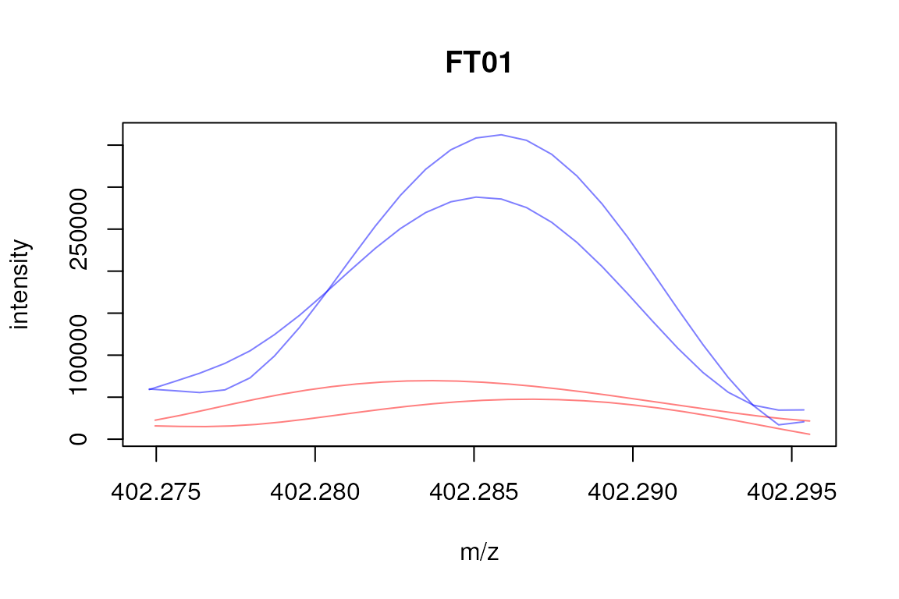

vignettes/xcms-direct-injection.Rmd
xcms-direct-injection.RmdThis document describes how to use xcms for the analysis of direct injection mass spec data, including peak detection, calibration and correspondence (grouping of peaks across samples).
Prior to any other analysis step, peaks have to be identified in the mass spec data. In contrast to the typical metabolomics workflow, in which peaks are identified in the chromatographic (time) dimension, in direct injection mass spec data sets peaks are identified in the m/z dimension. xcms uses functionality from the MassSpecWavelet package to identify such peaks.
Below we load the required packages. For information on the parallel processing setup please see the BiocParallel vignette.
In this documentation we use an example data set from the msdata package. Assuming that msdata is installed, we locate the path of the package and load the data set. We create also a data.frame describing the experimental setup based on the file names.
mzdata_path <- system.file("fticr", package = "msdata") mzdata_files <- list.files(mzdata_path, recursive = TRUE, full.names = TRUE) ## We're subsetting to 2 samples per condition mzdata_files <- mzdata_files[c(1, 2, 6, 7)] ## Create a data.frame assigning samples to sample groups, i.e. ham4 and ham5. grp <- rep("ham4", length(mzdata_files)) grp[grep(basename(mzdata_files), pattern = "^HAM005")] <- "ham5" pd <- data.frame(filename = basename(mzdata_files), sample_group = grp) ## Load the data. ham_raw <- readMSData(files = mzdata_files, pdata = new("NAnnotatedDataFrame", pd), mode = "onDisk")
The data files are from direct injection mass spectrometry experiments, i.e. we have only a single spectrum available for each sample and no retention times.
## Only a single spectrum with an *artificial* retention time is available ## for each sample rtime(ham_raw)
## F1.S1 F2.S1 F3.S1 F4.S1
## 1 1 1 1Peaks are identified within each spectrum using the mass spec wavelet method.
## Define the parameters for the peak detection msw <- MSWParam(scales = c(1, 4, 9), nearbyPeak = TRUE, winSize.noise = 500, SNR.method = "data.mean", snthresh = 10) ham_prep <- findChromPeaks(ham_raw, param = msw) head(chromPeaks(ham_prep))
## mz mzmin mzmax rt rtmin rtmax into maxo sn intf
## CP01 403.2367 403.2279 403.2447 -1 -1 -1 4735258 372259.4 22.97534 NA
## CP02 409.1845 409.1747 409.1936 -1 -1 -1 4158404 310572.1 20.61382 NA
## CP03 413.2677 413.2585 413.2769 -1 -1 -1 6099006 435462.6 27.21723 NA
## CP04 423.2363 423.2266 423.2459 -1 -1 -1 2708391 174252.7 14.74527 NA
## CP05 427.2681 427.2574 427.2779 -1 -1 -1 6302089 461385.6 32.50050 NA
## CP06 437.2375 437.2254 437.2488 -1 -1 -1 7523070 517917.6 34.37645 NA
## maxf sample
## CP01 814693.1 1
## CP02 732119.9 1
## CP03 1018994.8 1
## CP04 435858.5 1
## CP05 1125644.3 1
## CP06 1282906.5 1The calibrate method can be used to correct the m/z values of identified peaks. The currently implemented method requires identified peaks and a list of m/z values for known calibrants. The identified peaks m/z values are then adjusted based on the differences between the calibrants’ m/z values and the m/z values of the closest peaks (within a user defined permitted maximal distance). Note that this method does presently only calibrate identified peaks, but not the original m/z values in the spectra.
Below we demonstrate the calibrate method on one of the data files with artificially defined calibration m/z values. We first subset the data set to the first data file, extract the m/z values of 3 peaks and modify the values slightly.
## Subset to the first file. first_file <- filterFile(ham_prep, file = 1) ## Extract 3 m/z values calib_mz <- chromPeaks(first_file)[c(1, 4, 7), "mz"] calib_mz <- calib_mz + 0.00001 * runif(1, 0, 0.4) * calib_mz + 0.0001
Next we calibrate the data set using the previously defined artificial calibrants. We are using the "edgeshift" method for calibration that adjusts all peaks within the range of the m/z values of the calibrants using a linear interpolation and shifts all chromatographic peaks outside of that range by a constant factor (the difference between the lowest respectively largest calibrant m/z with the closest peak’s m/z). Note that in a real use case, the m/z values would obviously represent known m/z of calibrants and would not be defined on the actual data.
## Set-up the parameter class for the calibration prm <- CalibrantMassParam(mz = calib_mz, method = "edgeshift", mzabs = 0.0001, mzppm = 5) first_file_calibrated <- calibrate(first_file, param = prm)
To evaluate the calibration we plot below the difference between the adjusted and raw m/z values (y-axis) against the raw m/z values.
diffs <- chromPeaks(first_file_calibrated)[, "mz"] - chromPeaks(first_file)[, "mz"] plot(x = chromPeaks(first_file)[, "mz"], xlab = expression(m/z[raw]), y = diffs, ylab = expression(m/z[calibrated] - m/z[raw]))
Correspondence aims to group peaks across samples to define the features (ions with the same m/z values). Peaks from single spectrum, direct injection MS experiments can be grouped with the MZclust method. Below we perform the correspondence analysis with the groupChromPeaks method using default settings.
## Using default settings but define sample group assignment mzc_prm <- MzClustParam(sampleGroups = ham_prep$sample_group) ham_prep <- groupChromPeaks(ham_prep, param = mzc_prm)
Getting an overview of the performed processings:
ham_prep
## MSn experiment data ("XCMSnExp")
## Object size in memory: 0.05 Mb
## - - - Spectra data - - -
## MS level(s): 1
## Number of spectra: 4
## MSn retention times: 0:1 - 0:1 minutes
## - - - Processing information - - -
## Data loaded [Fri Jun 26 07:54:42 2020]
## MSnbase version: 2.15.3
## - - - Meta data - - -
## phenoData
## rowNames: 1 2 3 4
## varLabels: filename sample_group
## varMetadata: labelDescription
## Loaded from:
## [1] HAM004_641fE_14-11-07--Exp1.extracted.mzdata... [4] HAM005_641fE_14-11-07--Exp2.extracted.mzdata
## Use 'fileNames(.)' to see all files.
## protocolData: none
## featureData
## featureNames: F1.S1 F2.S1 F3.S1 F4.S1
## fvarLabels: fileIdx spIdx ... spectrum (35 total)
## fvarMetadata: labelDescription
## experimentData: use 'experimentData(object)'
## - - - xcms preprocessing - - -
## Chromatographic peak detection:
## method: MSW
## 38 peaks identified in 4 samples.
## On average 9.5 chromatographic peaks per sample.
## Correspondence:
## method: mzClust
## 20 features identified.
## Median mz range of features: 9.1553e-05
## Median rt range of features: 0The peak group information, i.e. the feature definitions can be accessed with the featureDefinitions method.
featureDefinitions(ham_prep)
## DataFrame with 20 rows and 10 columns
## mzmed mzmin mzmax rtmed rtmin rtmax npeaks
## <numeric> <numeric> <numeric> <numeric> <numeric> <numeric> <numeric>
## FT01 402.285 402.285 402.286 -1 -1 -1 2
## FT02 403.237 403.237 403.237 -1 -1 -1 4
## FT03 405.109 405.109 405.109 -1 -1 -1 2
## FT04 409.184 409.184 409.185 -1 -1 -1 2
## FT05 410.144 410.144 410.145 -1 -1 -1 2
## ... ... ... ... ... ... ... ...
## FT16 437.238 437.238 437.238 -1 -1 -1 2
## FT17 438.240 438.240 438.240 -1 -1 -1 2
## FT18 439.151 439.151 439.151 -1 -1 -1 2
## FT19 441.130 441.130 441.131 -1 -1 -1 2
## FT20 445.293 445.292 445.293 -1 -1 -1 2
## ham4 ham5 peakidx
## <numeric> <numeric> <list>
## FT01 0 2 16,28
## FT02 2 2 17,29,1,...
## FT03 0 2 18,30
## FT04 2 0 10,2
## FT05 0 2 19,31
## ... ... ... ...
## FT16 2 0 6,13
## FT17 2 0 7,14
## FT18 0 2 26,37
## FT19 0 2 38,27
## FT20 2 0 15,8Plotting the raw data for direct injection samples involves a little more processing than for LC/GC-MS data in which we can simply use the chromatogram method to extract the data. Below we extract the m/z-intensity pairs for the peaks associated with the first feature. We thus first identify the peaks for that feature and define their m/z values range. Using this range we can subsequently use the filterMz function to sub-set the full data set to the signal associated with the feature’s peaks. On that object we can then call the mz and intensity functions to extract the data.
## Get the peaks belonging to the first feature pks <- chromPeaks(ham_prep)[featureDefinitions(ham_prep)$peakidx[[1]], ] ## Define the m/z range mzr <- c(min(pks[, "mzmin"]) - 0.001, max(pks[, "mzmax"]) + 0.001) ## Subset the object to the m/z range ham_prep_sub <- filterMz(ham_prep, mz = mzr) ## Extract the mz and intensity values mzs <- mz(ham_prep_sub, bySample = TRUE) ints <- intensity(ham_prep_sub, bySample = TRUE) ## Plot the data plot(3, 3, pch = NA, xlim = range(mzs), ylim = range(ints), main = "FT01", xlab = "m/z", ylab = "intensity") ## Define colors cols <- rep("#ff000080", length(mzs)) cols[ham_prep_sub$sample_group == "ham5"] <- "#0000ff80" tmp <- mapply(mzs, ints, cols, FUN = function(x, y, col) { points(x, y, col = col, type = "l") })

To access the actual intensity values of each feature in each sample the featureValue method can be used. The setting value = "into" tells the function to return the integrated signal for each peak (one representative peak) per sample.
feat_vals <- featureValues(ham_prep, value = "into") head(feat_vals)
## HAM004_641fE_14-11-07--Exp1.extracted.mzdata
## FT01 NA
## FT02 4735258
## FT03 NA
## FT04 4158404
## FT05 NA
## FT06 6099006
## HAM004_641fE_14-11-07--Exp2.extracted.mzdata
## FT01 NA
## FT02 6202418
## FT03 NA
## FT04 5004546
## FT05 NA
## FT06 4950642
## HAM005_641fE_14-11-07--Exp1.extracted.mzdata
## FT01 4095293
## FT02 4811391
## FT03 2982453
## FT04 NA
## FT05 2872023
## FT06 NA
## HAM005_641fE_14-11-07--Exp2.extracted.mzdata
## FT01 4804763
## FT02 2581183
## FT03 2268984
## FT04 NA
## FT05 2133219
## FT06 NANA is reported for features in samples for which no peak was identified at the feature’s m/z value. In some instances there might still be a signal at the feature’s position in the raw data files, but the peak detection failed to identify a peak. For these cases signal can be recovered using the fillChromPeaks method that integrates all raw signal at the feature’s location. If there is no signal at that location an NA is reported.
ham_prep <- fillChromPeaks(ham_prep, param = FillChromPeaksParam()) head(featureValues(ham_prep, value = "into"))
## HAM004_641fE_14-11-07--Exp1.extracted.mzdata
## FT01 768754.0
## FT02 4735257.5
## FT03 652566.6
## FT04 4158404.5
## FT05 652201.1
## FT06 6099006.3
## HAM004_641fE_14-11-07--Exp2.extracted.mzdata
## FT01 1230140.4
## FT02 6202417.6
## FT03 374109.9
## FT04 5004546.3
## FT05 403448.4
## FT06 4950641.7
## HAM005_641fE_14-11-07--Exp1.extracted.mzdata
## FT01 4095293
## FT02 4811391
## FT03 2982453
## FT04 1221031
## FT05 2872023
## FT06 1573988
## HAM005_641fE_14-11-07--Exp2.extracted.mzdata
## FT01 4804762.5
## FT02 2581183.1
## FT03 2268984.5
## FT04 1241294.4
## FT05 2133219.4
## FT06 977694.5Further analysis, i.e. detection of features/metabolites with significantly different abundances, or PCA analyses can be performed on the feature matrix using functionality from other R packages, such as limma.